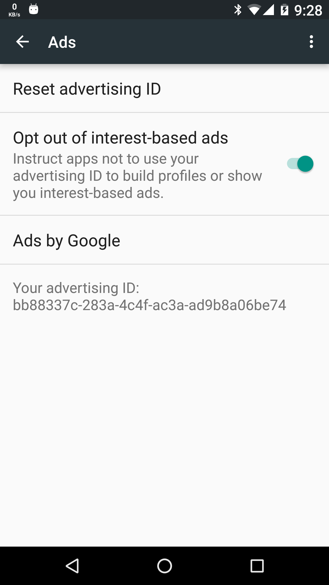

Privacy Browser Free includes a banner advertisement across the bottom of the screen that is populated by Google's AdMob network. By default, Google provides the advertising ID of the device to the ads displayed through this network. This allows advertising companies to build a profile of the device that show which apps are installed (that display ads), how often they are used, and which ads the user is interested in.
Users can choose to disable the advertising ID in Settings, Google, Ads.
The purpose of the free version of Privacy Browser is to allow people to test the features of the app. The standard version can be purchased on the major app stores or downloaded for free from F-Droid.
Verizon, one of the major mobile carriers in the United States, adds a unique tracking header to all HTTP traffic on their network. The Electronic Frontier Foundation has written about the privacy implications of this practice. Due to public pressure Verizon has created a way to opt out of this tracking.